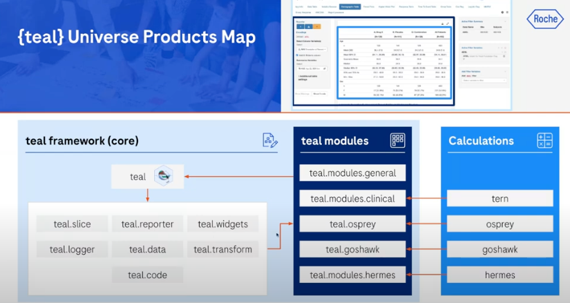

library(teal)
app <- init(
data = data,
modules = modules)
shinyApp(ui = app$ui, server = app$server)Teal 101
Teal
An overview of Teal project
Useful material
- Getting started with Teal
- Teal workshop PHUSE CSS 2025
- Teal gallery: sample apps based on teal framework
- Teal technical blueprint
- Video: a complete guide to getting started with teal. This video breaks down the components in a teal app, very useful
Running my first app
Mandatory arguments: data, module
Loads:
shinyteal.datateal.codeteal.slice
Main panel (Active Module Content)):
- shows two modules that loads IRIS data
- can have multiple
Side (right) (Filter Panel):
- active filter summary: number of observations
- active filter variables
Teal packages
teal.data: defines data of teal appteal.slice: defines data filtering before passing into modules
And others
Creating a teal app
The bare bone structure is like this below:
Data
- Input: data.frame, cdisc data format data.frame, multi-asset objects
teal_data(), if data is common across modulesteal_data_module()if data is different
Modules
teal.modules.general(): data.frameteal.modules.clinical(): cdisc datateal.modules.hermes(): multi-asset objects (check outTLG.catelog,biomarker.catelog)
Part 1: teal_data()
Creates an S4 object, <teal_data>
Slots: env, datanames, code, verified, join_keys (only useful for cdisc)
Methods: …
# create a single data object
data <- teal_data(
MTCARS = head(mtcars)
)Pharmaverse
How does teal fit in the pharmaverse ecosystem? (Examples)
SDTM
ADaM
TLG
Calculation and analysis
- tern: analysis functions for tables and graphs in clinical trial reporting
- osprey:
- goshawk
- hermes
Interactive (teal)
Calculations above link to the teal modules to add interactivity. In addition to teal.moduels.general, we have
- tern ->
teal.modules.clinical - osprey ->
teal.osprey - goshawk ->
teal.goshawk - hermes ->
teal.modules.hermes
